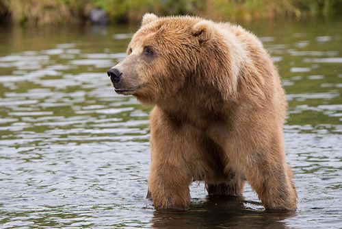

The trouble with Bears
By Evan Wild
Tall, lumbering, angry, dangerous. The real-life bears of this world are proud, independent creatures, self-serving and always on the hunt for food. Nothing like the friendly bears you see on TV or in children’s books.
But are bears really so terrible, and why does the world’s media portray them with such a skewed vision? In this article we try to answer those questions and give you some real insight into the life of the bear.
Types of bear
Bears come in two main varieties — large and medium. You don’t get small bears. If you have seen a small bear, then it was in fact probably a baby bear (cub) from another species.
Bears can also be classified in terms of their habitat — both large and medium bears are just as at home in urban areas as they are in the wild. Wild bears live in the woods, generally in caves, tree hollows, or rough bivouacs. Urban bears live in flats, bedsits, student halls, and garden sheds.

Bears are also characterized by their eating habits — wild bears will catch fish and other river/lakeside wildlife, and also eat fruits, nuts, and honey that they find in the forest. Urban bears eat a mixture of baked beans, takeaway food, and ready meals.

Habitats and eating habits
Wild bears eat a variety of meat, fish, fruit, nuts, and other formal foodstuffs, and tend to live in relative isolation, in caves, tents, or cottages.
Urban bears on the other hand have largely abandoned catching their own food, and mainly live on baked beans, microwave meals, takeaways, and Starbucks. They prefer to live in flats and bedsits, although some live in large houses with gardens.
| Bear type | Coat | Adult size | Habitat | Lifespan | Diet |
|---|---|---|---|---|---|
| Wild | Brown or black | 1.4 to 2.8 meters | Woods and forests | 25 to 28 years | Fish, meat, plants |
| Urban | North Face | 1.8 to 2.2 meters | Condos and coffee shops | 20 to 32 years | Starbucks, sushi |
Bear sounds
Listen to what a happy brown bear sounds like:
Audio transcript (for accessibility)
Low rumbling bear growls, followed by softer snuffling noises. The bear growls twice more, then the sound fades as it walks away.
Sam
I love bears! They are adorable but also very powerful.
Jo
Interesting article — I didn’t know there were urban bears!